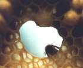
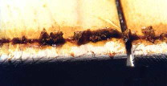

Il termine propoli, secondo l’etimologia greca o latina, indica ciò che sta davanti, a difesa della città, che ha la funzione di pulire, disinfettare. In realtà le api utilizzano questa sostanza per rivestire tutte le superfici interne dell’alveare, i favi e le pareti dell’arnia, con lo scopo di impedire il diffondersi di batteriosi e malattie che la presenza di tanti insetti molto vicini e a contatto tra loro favorirebbero facilmente.L’uso della propoli in soluzione alcoolica trova applicazioni in dermatologia, in odontostomatologia ed in gastroenterologia per le sue proprietà antibatteriche e antibiotiche naturali.

Per uso interno è preferibile inserire direttamente nel cavo orale poche gocce di soluzione, dopo aver sorseggiato un po’ d’acqua, e quindi ingerire. E’ possibile anche usare un pezzetto di mollica di pane con alcune gocce di propoli, da tenere in bocca senza masticare, lasciandolo ammorbidire con la saliva.
ferup@libero.it